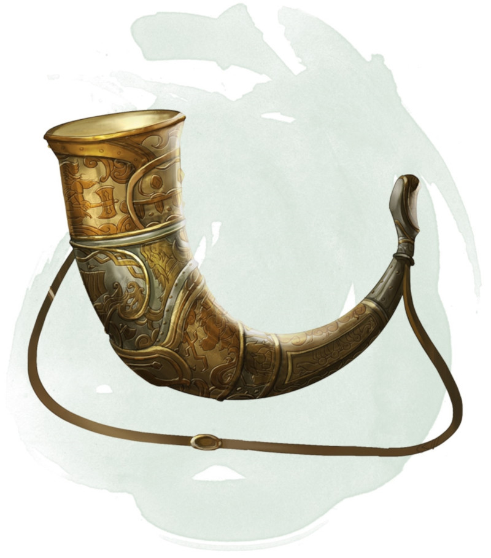

Cor du Valhalla
[ Horn of Valhalla ]
Objet merveilleux, rare (argent ou airain) très rare (bronze) ou légendaire (fer)
Vous pouvez utiliser une action pour souffler dans ce cor. En réponse, des esprits guerriers venant du Valhalla apparaissent dans un rayon de 18 mètres autour de vous. Ils utilisent les statistiques du berserker. Ils retournent au Valhalla au bout d'une heure ou lorsqu'ils tombent à 0 point de vie. Une fois que vous avez utilisé le cor, il ne peut pas être réutilisé avant que 7 jours ne se soient écoulés.
On connait à ce jour l'existence de quatre types de cor du Valhalla, chacun fin d'un métal différent. Le type du cor détermine combien de berserkers répondent à sa convocation, de même que les conditions nécessaires à son utilisation. Le MD choisit le type du cor ou le détermine aléatoirement.
Si vous soufflez dans le cor sans remplir ses conditions d'utilisation, les berserkers invoqués vous attaquent. Si vous remplissez les conditions, ils sont amicaux envers vous et vos compagnons et suivent vos ordres.
On connait à ce jour l'existence de quatre types de cor du Valhalla, chacun fin d'un métal différent. Le type du cor détermine combien de berserkers répondent à sa convocation, de même que les conditions nécessaires à son utilisation. Le MD choisit le type du cor ou le détermine aléatoirement.
| d100 | Type du cor | Berserkers invoqués | Condition |
|---|---|---|---|
| 01-40 | Argent | 2d4 + 2 | Aucune |
| 41-75 | Airain | 3d4 + 3 | Maîtrise de toutes les armes courantes |
| 76-90 | Bronze | 4d4 + 4 | Maîtrise de toutes les armures intermédiaires |
| 91-00 | Fer | 5d4 + 5 | Maîtrise de toutes les armes de guerre |
Si vous soufflez dans le cor sans remplir ses conditions d'utilisation, les berserkers invoqués vous attaquent. Si vous remplissez les conditions, ils sont amicaux envers vous et vos compagnons et suivent vos ordres.
Dungeon Master´s Guide (SRD)
